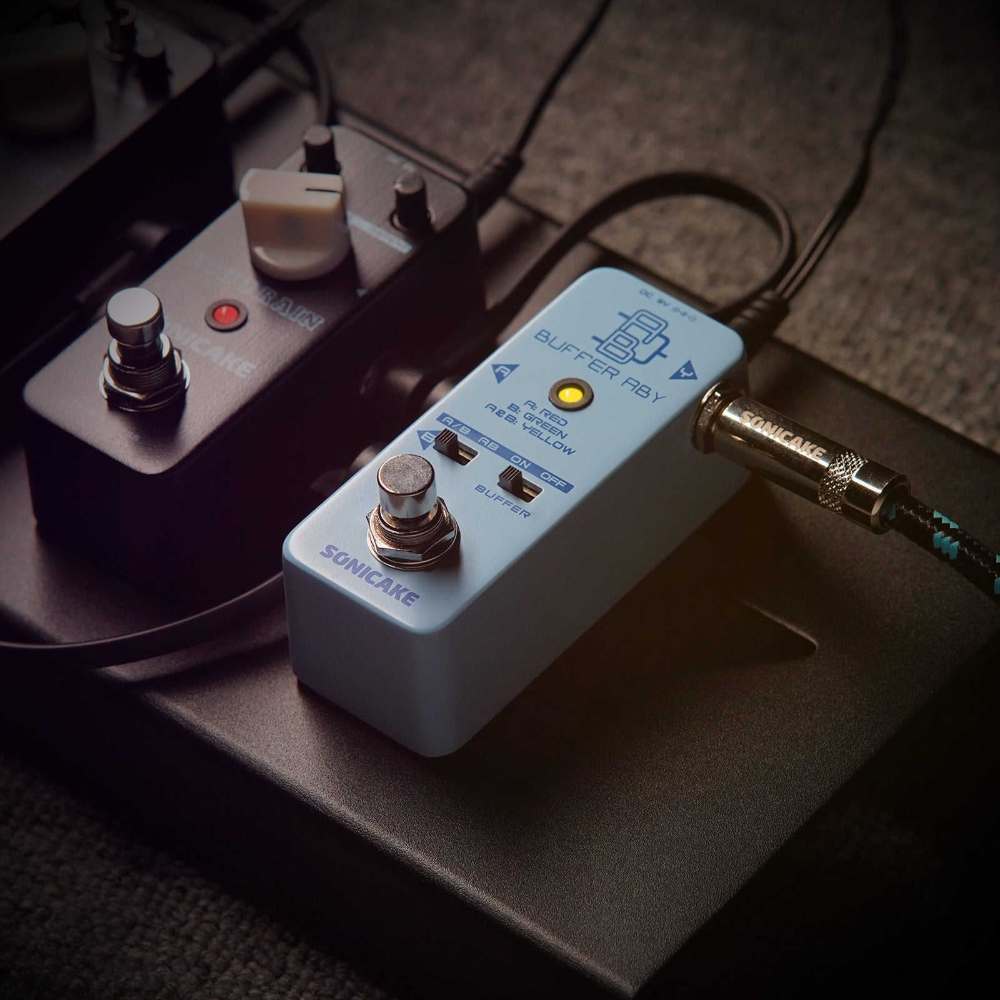
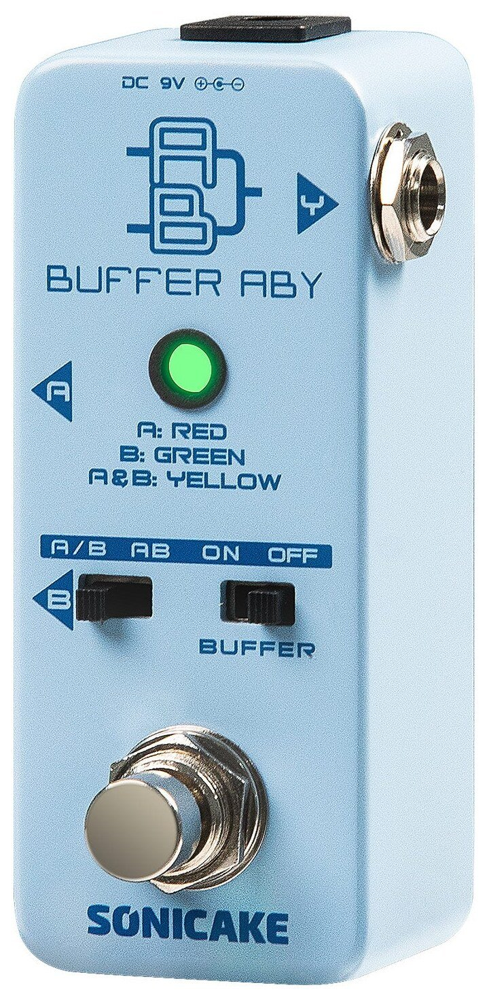

Taste it
Minilane Series Pedal · QSS-23

Buffer ABY
The printed manual is a single card. The routing rules, the buffer and power notes and the impedances below are compiled from Sonicake’s product page and its Amazon listing.
Buffer ABY is a tiny, sturdy ABY Switcher with a BUFFER switch. You can choose whether to turn on BUFFER according to the scene. When the BUFFER is turned off, it is a true bypass. With the magical design you can feed your guitar signal to two amps, connect two instruments to the same amp, A/B signal route switching, and many more. Get connected with amps, pedals, instruments – You decide!
- Signal flow from A/B to Y, or from Y to A/B (turn off the BUFFER switch).
- Selectable “A and B” / “A or B”.
- LED indicates working status.
- You can choose true bypass to keep a clean signal path, or buffer circuitry to improve the sound quality.
- Works with a 9V center-negative regular pedal power supply (not included).
Connections and controls

- DC 9V
- Plug in your power jack.
- A and B jacks
- Plug in your instruments, pedals, amps, depending on your needs.
- Y jack
- Plug in your instruments, pedals, amps, depending on your needs (when the Y interface is used for output, please turn off the BUFFER switch).
- A/B – AB switch
-
Switch between two different modes:
- A/B: toggle between A (A↔Y) / B (B↔Y) channels;
- AB: both A and B channels are engaged as outputs (use Y as input only, Y→A+B).
- BUFFER switch
- You can choose whether to turn on the Buffer circuit according to the scene.
- Footswitch and LED
- In A/B mode, tap the footswitch to toggle between A (LED shows red) / B (LED shows green) channels; in AB mode, the footswitch doesn’t work (LED shows yellow).
Modes and signal flow
The two slide switches set what each jack may do. Y is the common jack; A and B are the two branches.
| Mode | BUFFER | Signal flow | Footswitch | LED |
|---|---|---|---|---|
| A/B | OFF | A↔Y or B↔Y, in either direction: one source to one of two amps, or one of two instruments to one amp | Toggles A / B | Red (A) / green (B), when powered |
| A/B | ON | Y→A or Y→B: Y must be the input | Toggles A / B | Red (A) / green (B) |
| AB | OFF or ON | Y→A+B: Y is the input, both outputs live | Does nothing | Yellow |
Buffer and power
Can be used without power supply
Turn off the BUFFER switch and it can be used even without power. At this time, it is true bypass.
The buffer circuit runs on the 9V supply, and so does the LED. Sonicake lists an input impedance of 1MΩ and an output impedance of 1kΩ, without saying which BUFFER position they apply to.
When the BUFFER is turned off, the Y interface can be used for output. When the Y interface is used for output – two instruments into A and B, one out of Y – please turn off the BUFFER switch.
Specifications
| Power: | DC 9V 5.5x2.1mm center negative, 80mA |
|---|---|
| Input impedance: | 1MΩ |
| Output impedance: | 1kΩ |
| Dimensions: | 93.5mm (D) x 42mm (W) x 52mm (H) |
| Weight: | 240g |
Owner reports
Not from Sonicake: what buyers wrote in store reviews. Each one is a single owner’s experience.
- Works as an ABY switcher with no power at all; the powered buffer clearly cut the noise of a noisy amp and the tone loss of a DIY reverb pedal. Moving a slide switch while the pedal is powered makes a pop. (Amazon Japan)
- With two instruments plugged into A and B, the buffer does nothing; it switches between active and passive only when the signal enters at Y. (sonicake.com review)
- No input and output impedance figures are given for buffer ON. (sonicake.com review)
- Switching noise is too loud. (Amazon Italy)
- The adhesive Velcro on the rubber base does not stick. (sonicake.com review)